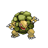

Назад
Гравелер
Гравелер — Покемон 1 поколения под номером 75 в Покедекс. Обитает он в регионе Канто и относится к Каменному и Земляному типу. Гравелер растёт, питаясь камнями. Похоже, что он предпочитает есть камни, покрытые мхом. Этот Покемон ежедневно съедает по тонне камней.
Тип:
Земляной
Каменный
Эволюция
# 075 Гравелер
=>

# 076 Голем